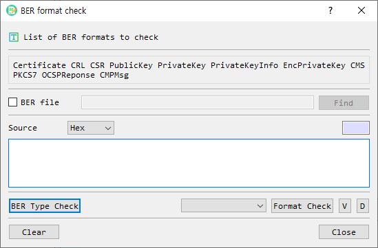

BER Format Check Dialog Guide
The BER format check dialog checks whether BER-encoded data matches a supported PKI format. It can identify a format, validate a selected format, open format-specific details, or decode the data in the main BerEditor window. Open it from Tool > Check BER.

Figure 1. BER format check dialog. Provide a file or encoded source, identify or select a format, then choose the appropriate check or view action.
Supported Formats
The dialog can identify or check these formats:
- Certificate
- CRL (certificate revocation list)
- CSR (certificate signing request)
- PublicKey
- PrivateKey
- PrivateKeyInfo
- EncPrivateKey (encrypted private key)
- CMS
- PKCS7
- OCSP response
- CMP message
Screen Areas
- Format list — Shows the formats supported by the checker.
- BER file — Select this to use a file as the source. The Find button opens a BER file picker, and the path is shown beside the checkbox.
- Source format — When BER file is unchecked, choose how the source text is represented: Hex or Base64.
- Source length — Shows the calculated length for the selected source representation.
- Source input — Enter or paste the encoded bytes when using text input.
- BER Type Check — Detects the source's supported PKI format and selects it in the format list.
- Format selector — Choose a specific format to validate or inspect.
- Format Check — Checks whether the source conforms to the selected format and reports success or an error.
- V — Opens the format-specific information view after validating the selected format. Encrypted private keys require a password.
- D — Decodes the source in the main BerEditor window using the selected format title.
- Clear — Clears the file path and source text.
- Close — Closes the dialog.
Check a Source File or Value
- Choose the source method:
- To check a file, select BER file, then select Find and choose the file.
- To check encoded text, leave BER file unchecked, select Hex or Base64, and enter the source in the input area.
- Select BER Type Check to detect a supported format, or choose the expected format from the format selector.
- Select Format Check to validate the source against the selected format.
- Read the success message or the reported format error.
Open Details or Decode
- After choosing a format, select V to open its detail window. The selected format must pass its format check. Available detail views include certificate, CRL, CSR, public/private key, CMS/PKCS7, OCSP response, and CMP message information.
- Select D to decode the source in the main BER view. A format must be selected first.
- For an encrypted private key, V prompts for the password before showing key details.
Notes and Troubleshooting
- When using text input, the source must match its selected representation (Hex or Base64). Invalid or empty input cannot be checked.
- BER Type Check identifies only the formats listed above. If the source is unsupported or malformed, the dialog reports that it could not determine a supported format.
- Format Check requires a format selection. Choose the expected type or run BER Type Check first.
- Use Clear before starting a new check to remove the previous file path and source text.